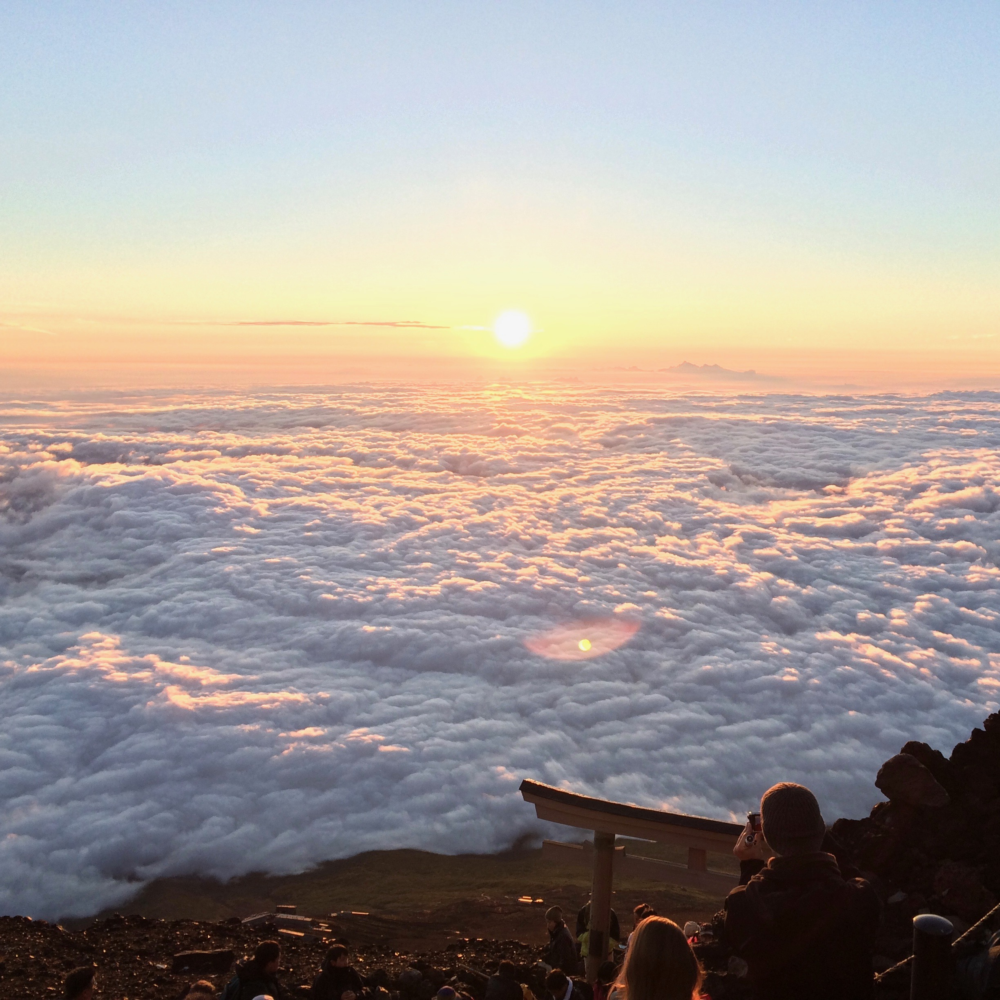
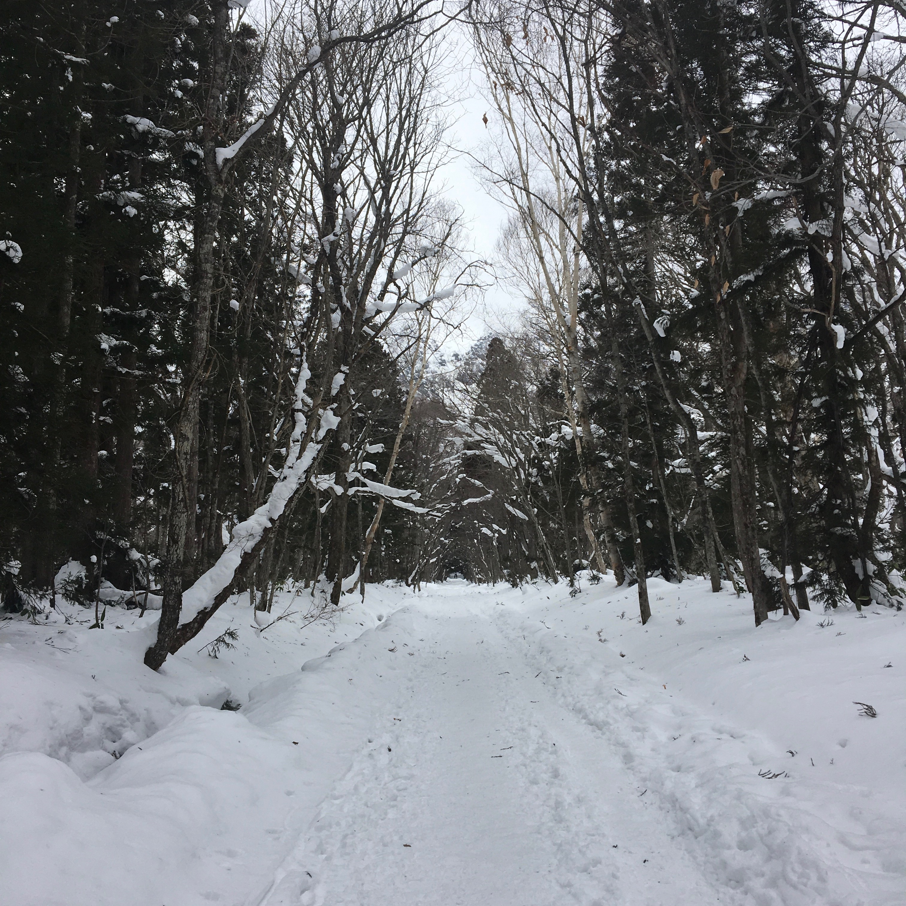
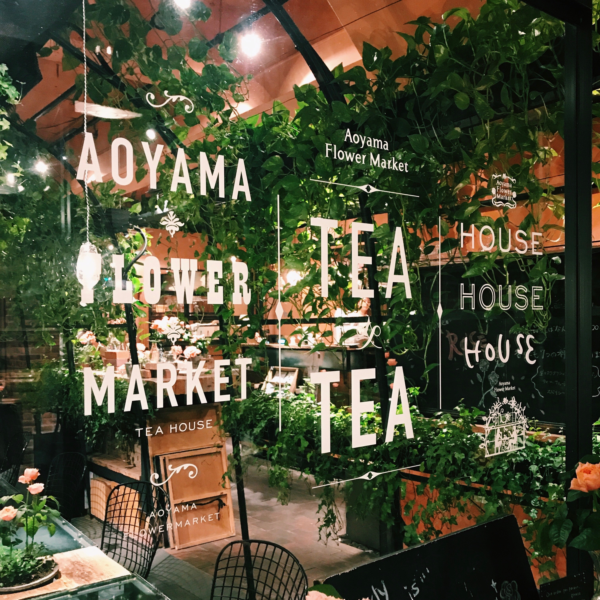

mt. fuji

hong kong

nagano

sadogashima

dubai

aoyama
mt. fuji
hong kong
nagano
sadogashima
dubai
aoyama
September 2020 Update
What a year it has been. My Peace Corps journey has yet to really begin, but some updates so far:
When the Covid-19 Pandemic first started, the Peace Corps had to make the difficult decision to pull out thousands of current volunteers from across the world. Thereafter, they suspended all program operations for current and departing volunteers. I was orginally slated to leave for Indonesia in early September of 2020, but in June the Peace Corps notified us that they would be delaying the Indonesia program until September 2021, at the earliest.
There have been many difficult decisions to make, since my post-graduation plans and beyond have flopped around. For the time being, I continue to pursue opportunities in international development and hope to serve in the Peace Corps one day (hopefully soon!). I think more than ever international work, collaboration, and compassion are crucial in tackling this crazy year.